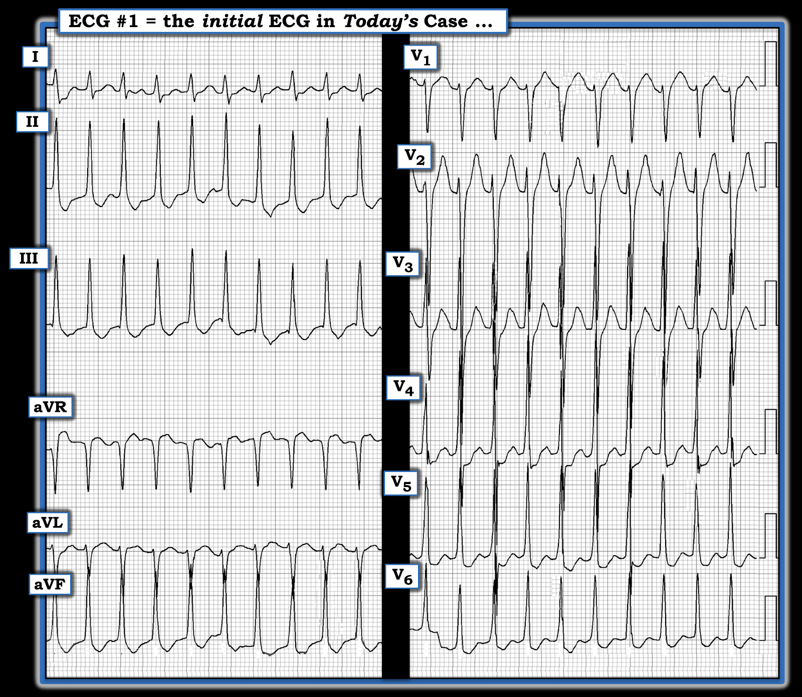
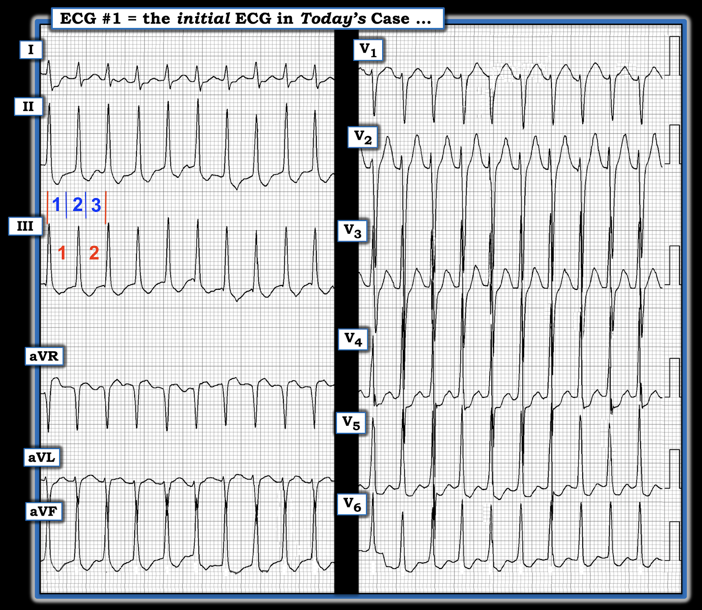
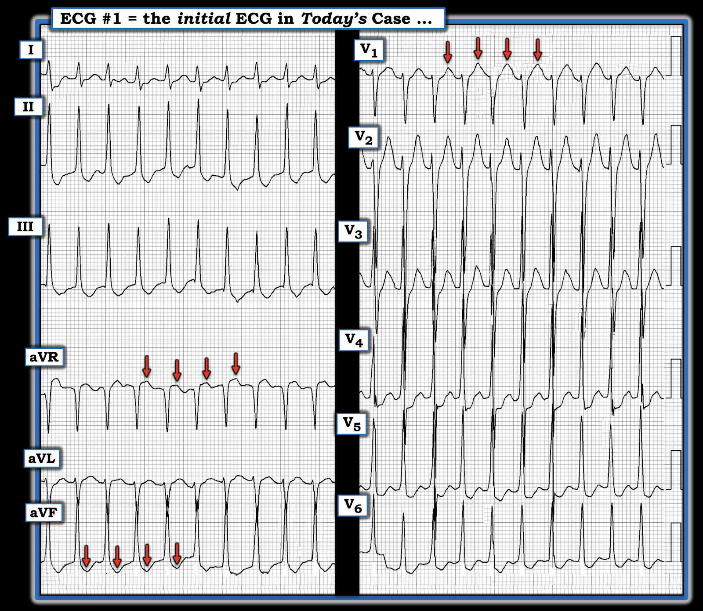
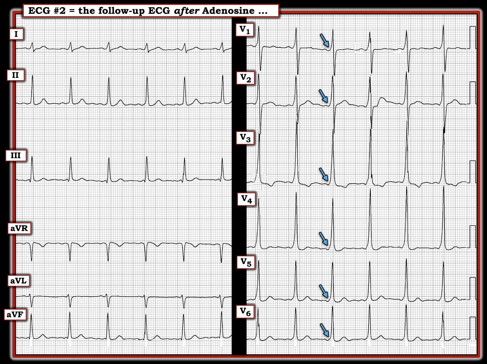
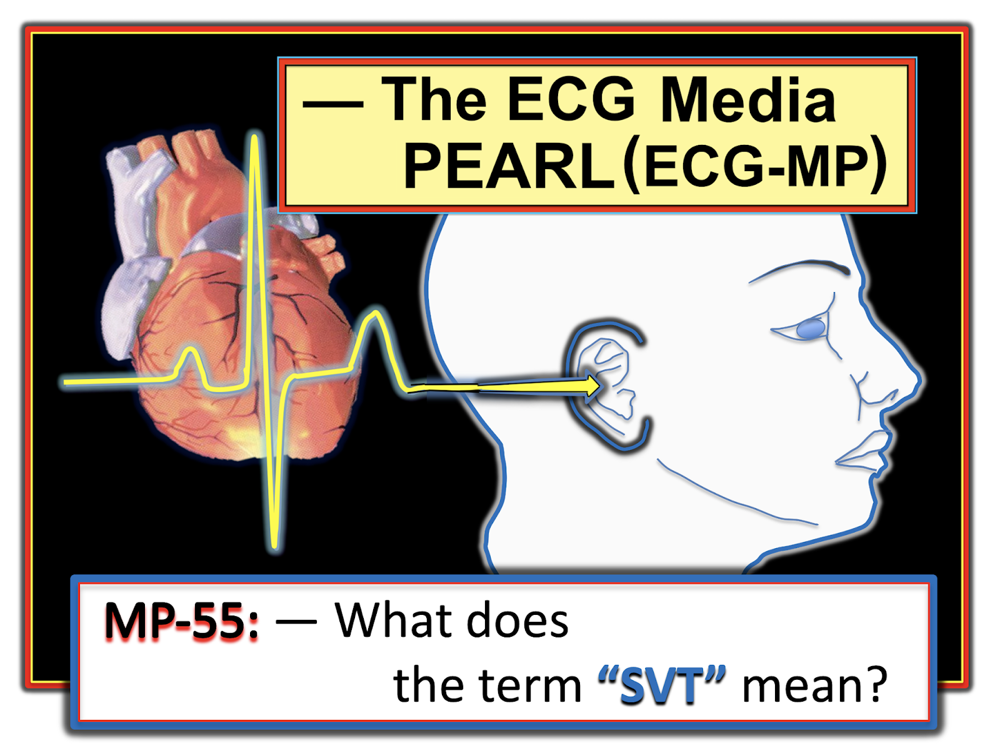
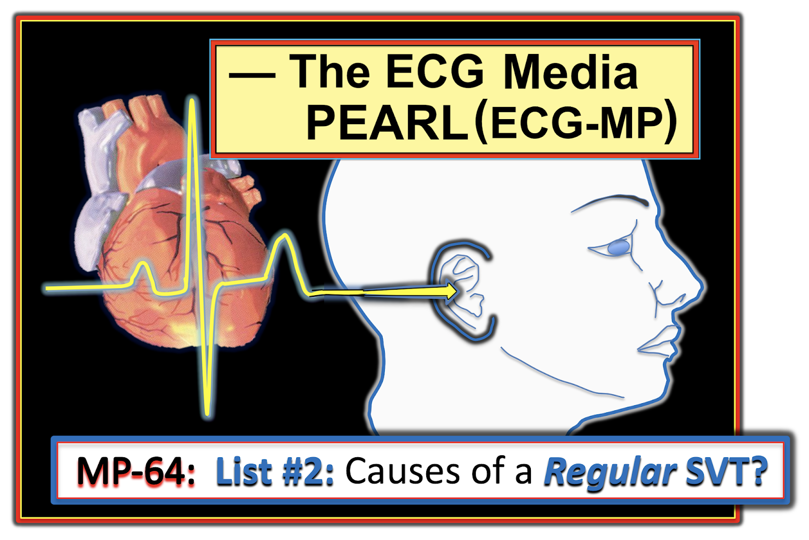
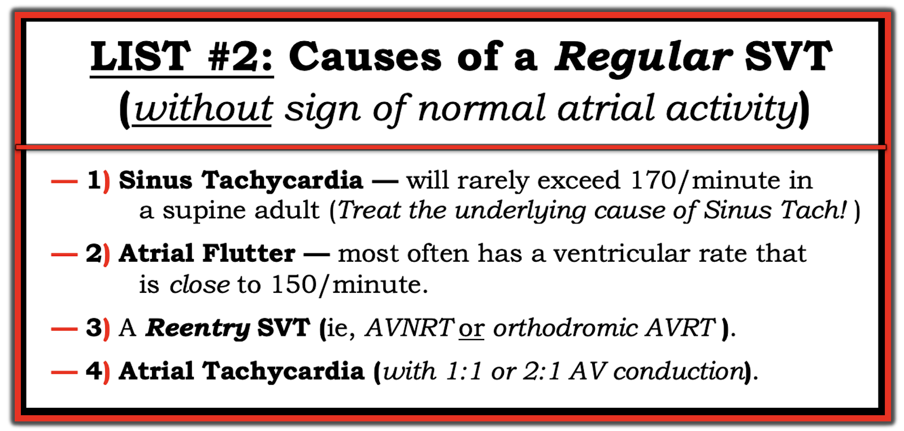

ECG Blog #345 — Dẫn truyền xuôi - ngược?
Điện tâm đồ ở Hình-1 — được ghi từ một nam thanh niên trước đó khỏe mạnh, đến khám vì “tim đập nhanh”. Bệnh nhân ổn định huyết động vào thời điểm ghi điện tâm đồ này.
- BẠN sẽ đọc điện tâm đồ này thế nào?
- Có bất kỳ hoạt động nhĩ nào không?
- AFlutter (cuồng nhĩ – Atrial Flutter) và nhịp nhanh xoang có nằm trong chẩn đoán phân biệt của bạn không?


SUY NGHĨ CỦA TÔI về điện tâm đồ ở Hình-1:
Như mọi khi — tôi thích bắt đầu việc đọc một điện tâm đồ 12 chuyển đạo bằng cách đánh giá nhịp tim — trước khi xem xét điện tâm đồ 12 chuyển đạo. Như trong ECG Blog #185 — tôi ưa dùng cách tiếp cận Ps, Qs, 3R, bắt đầu với bất kỳ thông số nào trong 5 thông số này dễ đánh giá nhất trên bản ghi đang ở trước mặt tôi:
- Nhịp ở Hình-1 nhanh và đều (Regular).
- Phức bộ QRS hẹp ở cả 12 chuyển đạo (tức là, thời gian QRS không quá một nửa ô lớn = không quá 0.10 giây). Do đó — nhịp này là nhịp trên thất!
- Sóng P xoang bình thường không có (tức là, không có sóng P dương xuất hiện đều đặn ở chuyển đạo II).
- Tần số (Rate) của nhịp là ~190/phút.
ĐIỂM THEN CHỐT (PEARL) #1: Theo kinh nghiệm của tôi — cách dễ nhất để ước tính chính xác tần số tim khi nhịp nhanh và đều — là dùng phương pháp Cách-Một-Nhát (Every-Other-Beat Method; xem ECG Blog #210). Lý do điều này có ý nghĩa lâm sàng trong ca hôm nay — là vì ước tính chính xác tần số tim sẽ thu hẹp đáng kể chẩn đoán phân biệt của chúng ta khi xác định nhịp tim.
- Để áp dụng phương pháp này — hãy tìm một phần của phức bộ QRS ở bất kỳ chuyển đạo nào trong 12 chuyển đạo, bắt đầu hoặc kết thúc trên một đường kẻ đậm của lưới điện tâm đồ. Ở Hình-2 — đỉnh sóng R ở chuyển đạo III bắt đầu ngay sau đường thẳng đứng MÀU ĐỎ thứ 1.
- Như các con số MÀU ĐỎ cho thấy — sóng R của phức bộ QRS thứ 3 ở chuyển đạo III (tức là, khoảng R-R của cách-một-nhát) xuất hiện sau đó hơn 3 ô lớn một chút.
- Do đó — thời gian cần để ghi 2 nhát (các con số MÀU XANH ở Hình-2) — là hơn 3 ô lớn một chút. Điều này có nghĩa là MỘT NỬA tần số thì thấp hơn một chút so với 300 ÷ 3, tức ~95/phút. Tần số tim thực là GẤP ĐÔI con số này (tức là, ~95 X 2 = 190/phút).


ĐIỂM THEN CHỐT (PEARL) #2: Từ các thông số chúng ta vừa đánh giá — nhịp ở Hình-2 là một SVT đều (nhịp nhanh trên thất – SupraVentricular Tachycardia) với tần số ~190/phút, nhưng không có dấu hiệu rõ của sóng P xoang (tức là, không có sóng P dương chắc chắn ở chuyển đạo II). Mô tả này cần gợi ý chúng ta xem xét chẩn đoán phân biệt sau đây:
- i) Nhịp nhanh xoang (NẾU có khả năng sóng P xoang đang ẩn trong sóng ST-T đứng trước);
- ii) Một SVT vào lại (hoặc là AVNRT nếu vòng vào lại nằm gọn trong nút AV — hoặc AVRT nếu có sự tham gia của một AP [Accessory Pathway – đường phụ] nằm ngoài nút AV);
- iii) Nhịp nhanh nhĩ (ATach);
- iv) Cuồng nhĩ (AFlutter) với dẫn truyền AV 2:1.
Điểm MẤU CHỐT: Mặc dù các bệnh cảnh khác cũng có thể gây SVT đều (tức là, nhịp nhanh vào lại nút xoang nhĩ, nhịp nhanh bộ nối) — trên thực tế chúng ít gặp hơn nhiều. Vì vậy, nhớ nghĩ tới 4 bệnh cảnh trong DANH SÁCH trên mỗi khi bạn gặp một nhịp SVT đều không có dấu hiệu rõ của sóng P xoang — sẽ giúp ích rất nhiều cho việc xác định đúng chẩn đoán.
ĐIỂM THEN CHỐT (PEARL) #3: Tần số tim giúp ích thế nào trong chẩn đoán SVT:
- Nhịp nhanh xoang thường không vượt quá 160-170/phút ở người lớn "đang nằm" (tức là, ở một bệnh nhân bạn đang khám, người không vừa chạy hay thực hiện một hình thức vận động gắng sức nào khác). Điều này không có nghĩa là nhịp nhanh xoang sẽ không bao giờ nhanh hơn 170/phút — mà là gợi ý rằng khi tần số của nhịp SVT đều bạn đang đánh giá rõ ràng vượt khoảng tần số này — thì nhịp đó thường không phải là nhịp nhanh xoang.
- LƯU Ý: Ở trẻ em thì mọi quy luật trên không còn áp dụng — ở trẻ em, nhịp nhanh xoang với tần số trên 200/phút không hiếm gặp đến vậy.
- Với AFlutter — đáp ứng thất thường gặp nhất ở bệnh nhân không đang điều trị thuốc chống loạn nhịp là ~150/phút (khoảng thường gặp ~140-160/phút). Đó là vì tần số nhĩ trong AFlutter chưa điều trị thường là ~300/phút (khoảng thường gặp ~250-350/phút) — và vì AFlutter chưa điều trị thường biểu hiện với dẫn truyền AV 2:1 — 300÷2 ~150/phút. Do đó — NẾU tần số thất của nhịp SVT đều bạn đang đánh giá vượt quá ~170-180/phút — thì khả năng AFlutter thấp hơn nhiều, vì tần số này sẽ nhanh hơn dự kiến đối với dẫn truyền AV 2:1, và lại quá chậm đối với dẫn truyền AV 1:1.
- Điểm MẤU CHỐT: Khoảng tần số ~140-160/phút này là dành cho AFlutter chưa điều trị. Bệnh nhân đã dùng thuốc chống loạn nhịp có thể biểu hiện AFlutter với tần số nhĩ chậm hơn (và do đó đáp ứng thất chậm hơn).
- LƯU Ý: Hãy nhớ rằng ATach ít gặp hơn với vai trò là nguyên nhân gây một SVT đều tuyệt đối, đặc biệt ở người lớn trẻ đến trung niên vốn khỏe mạnh. ATach hay gặp hơn ở những bệnh nhân được chuyển làm EP (ElectroPhysiologic testing – thăm dò điện sinh lý) — và ở người lớn tuổi có SSS (Sick Sinus Syndrome – hội chứng suy nút xoang). Như đã nêu ở ĐIỂM THEN CHỐT #2 — tôi đưa ATach vào DANH SÁCH chẩn đoán phân biệt SVT đều ở trên cho đầy đủ — nhưng trong thực hành không phải nơi nhận chuyển tuyến EP, ATach sẽ không gặp thường xuyên bằng AFlutter và các SVT vào lại.
- TÓM TẮT: NẾU tần số của một SVT đều không có dấu hiệu rõ của sóng P xoang nhanh hơn đáng kể so với 160-170/phút — thì một nhịp SVT vào lại (tức là, AVNRT hoặc AVRT) trở thành chẩn đoán có khả năng nhất. Tuy nhiên, NẾU tần số của SVT đều gần với 150/phút (tức là, 140-160/phút) — thì bất kỳ bệnh cảnh nào trong 4 bệnh cảnh chẩn đoán thuộc DANH SÁCH ở ĐIỂM THEN CHỐT #2 ở trên đều có thể hiện diện ( = nhịp nhanh xoang — AVNRT-AVRT — ATach — AFlutter).
Về CA BỆNH HÔM NAY:
Như đã suy ra ở trên — ca hôm nay có một nhịp SVT đều hoàn toàn, không có sóng P xoang — với tần số ~190/phút.
- Với tần số nhanh như vậy — nhịp nhanh xoang và AFlutter đều ít có khả năng (xem ĐIỂM THEN CHỐT #3).
- Về mặt thống kê — nhịp SVT đều hoàn toàn như thấy ở Hình-2 ít khi là do ATach.
- Như vậy còn lại SVT vào lại (tức là, AVNRT hoặc AVRT) — là chẩn đoán có khả năng nhất.
- "Tin tốt" — là bất kể nhịp trong ca hôm nay là AVNRT hay AVRT — cả hai nhịp này thường đáp ứng với hoặc Adenosine hoặc một thuốc ức chế nút AV khác (tức là, Verapamil, Diltiazem, thuốc chẹn ß).
CÂU HỎI:
- Mặc dù không có sóng P xoang ở điện tâm đồ #1 — Liệu có bằng chứng nào khác về hoạt động nhĩ không?
- GỢI Ý: Các mũi tên ĐỎ ở Hình-3 có thể đang chỉ vào điều gì?


Các mũi tên ĐỎ có thể là gì?
Những dấu hiệu tinh tế của hoạt động nhĩ trong một nhịp SVT đều có thể cung cấp manh mối quan trọng về nguyên nhân của rối loạn nhịp.
- Hoạt động nhĩ ngược dòng (retrograde) trong nhịp SVT dễ nhận ra nhất nhờ phát hiện sóng P âm ở một hoặc nhiều chuyển đạo thành dưới. Độ lệch sóng P âm này có thể thấy dưới dạng một khía ở phần cuối phức bộ QRS — một khía trên sóng ST-T — hoặc đôi khi sau điểm kết thúc sóng T.
- Các chuyển đạo khác mà tôi thấy hữu ích nhất để nhận ra hoạt động nhĩ ngược dòng là chuyển đạo aVR và chuyển đạo V1. Khi thấy ở các chuyển đạo này — hoạt động nhĩ ngược dòng biểu hiện là một độ lệch dương.
- Điểm MẤU CHỐT: Khoảng cách từ khởi đầu sóng R cho đến khởi đầu sóng P ngược dòng được gọi là khoảng RP' (RP' interval).
- NẾU thấy sóng P ngược dòng trong một nhịp SVT đều — và khoảng RP' ngắn (tức là, ≤70 msec.) — thì AVNRT (nhịp nhanh vào lại nút nhĩ thất – AtrioVentricular Nodal Reentrant Tachycardia), trong đó vòng vào lại nằm hoàn toàn trong nút AV, trở nên có khả năng hơn! (González-Torrecilla và cs.: Ann Noninvasive Electrocardiol 16(1):85-95, 2011.
- Ngược lại, khi khoảng RP' dài hơn một chút — thì AVRT (nhịp nhanh vào lại nhĩ thất – AtrioVentricular Reciprocating Tachycardia), trong đó vòng vào lại đi qua cả nút AV và đi ra ngoài nút AV để qua một AP (đường phụ – Accessory Pathway), trở nên có khả năng hơn.
- Vì việc đo chính xác khoảng RP' thường khó khăn — tôi coi khoảng RP' là ngắn (tức là, gợi ý AVNRT) nếu sóng P ngược dòng hoặc tạo khía ở cuối QRS, hoặc xuất hiện rất sớm sau QRS (xem ECG Blog #240 để được bàn luận chi tiết về các khái niệm RP' này).
- Về ca hôm nay: Dù khó chắc chắn — tôi nghi ngờ rằng phần sâu nhất của sóng T âm ở các chuyển đạo thành dưới và đỉnh sóng T ở chuyển đạo aVR và V1 nhọn hơn mong đợi (mũi tên ĐỎ ở Hình-3). NẾU các độ lệch nhọn này thực sự là hoạt động nhĩ ngược dòng — thì khoảng RP' sẽ tương đối dài. Điều này ủng hộ khả năng AVRT xuôi chiều (orthodromic; tức là, xung động ban đầu đi xuống theo đường nút AV bình thường để vào tâm thất — sau đó vòng vào lại đi ngược dòng trở về tâm nhĩ bằng dẫn truyền qua một AP).
- Xin nhấn mạnh — Việc có hay không một AP tham gia vào vòng vào lại của nhịp SVT trong ca hôm nay không nên ảnh hưởng đến quyết định lâm sàng. Đó là vì các thuốc ức chế nút AV sẽ có tác dụng bất kể cơ chế của nhịp SVT vào lại này là gì.
Kết thúc Ca bệnh HÔM NAY:
Bệnh nhân trong ca hôm nay được điều trị bằng Adenosine tĩnh mạch (IV). Kết quả điều trị được thể hiện ở Hình-4.
- Chuyện gì đã xảy ra?


Kết quả điều trị:
Điều trị bằng Adenosine tĩnh mạch đã chuyển nhịp nhanh chóng về nhịp xoang (Hình-4). Mặc dù giờ đã thấy sóng P xoang khá bình thường ở chuyển đạo II — khoảng PR rõ ràng bị ngắn lại ở mỗi chuyển đạo ngực. Phức bộ QRS rộng — và thấy rõ sóng delta ở mỗi chuyển đạo ngực này (mũi tên XANH).
- Bản ghi sau chuyển nhịp ở Hình-4 cho thấy bệnh nhân hôm nay có hội chứng WPW (Wolff-Parkinson-White). Vì không thấy sóng delta trong cơn nhịp nhanh — AP của bệnh nhân này đã "ẩn" (concealed) trong suốt nhịp SVT.
- Nhìn lại — các mũi tên ĐỎ tôi đánh dấu ở Hình-3 quả thật là kết quả của hoạt động nhĩ ngược dòng quay về tâm nhĩ qua AP (từ đó tạo ra khoảng RP' tương đối dài).
- ĐIỂM CUỐI CÙNG: Bệnh nhân trong ca hôm nay không nhất thiết phải triệt đốt AP. Việc có nên chuyển bệnh nhân này tới chuyên khoa Điện sinh lý tim (EP) hay không nên tùy thuộc vào: i) Bệnh nhân muốn làm gì! — và — ii) Các cơn SVT xảy ra thường xuyên đến mức nào — mỗi cơn kéo dài bao lâu — và việc kiểm soát cơn khó (hay không khó) đến đâu khi chú ý tới các yếu tố khởi phát tiềm tàng và/hoặc dùng thuốc (xem ECG Blog #155 để được bàn luận về xử trí WPW mới phát hiện).
=======================
LỜI CẢM ƠN: Xin cảm ơn một người gửi ẩn danh (từ Malaysia) đã chia sẻ ca bệnh và bản ghi này.
=======================
===================================
PHẦN BỔ SUNG (ngày 18 tháng 11 năm 2022):
- Tôi đã từng trình bày nội dung trong 2 Pearl Audio dưới đây — nhưng nội dung này đáng được nhắc lại để tiện tra cứu. Việc nắm vững các khái niệm này phải trở thành phản xạ khi đánh giá bệnh nhân đến khám với một nhịp SVT đều.


ECG Media PEARL #55 (4:20 phút Audio) hôm nay — thuật ngữ "SVT" có nghĩa là gì? Pearl Audio này ôn lại ngữ nghĩa và ứng dụng lâm sàng liên quan đến việc sử dụng thuật ngữ này.




ECG Media PEARL #64 (10:50 phút Audio) hôm nay — Ôn lại DANH SÁCH #2: Các nguyên nhân thường gặp của nhịp SVT đều.
===================================
Tài liệu bổ sung liên quan đến ca hôm nay:
- Xem ECG Blog #185 — để ôn lại cách tiếp cận Ps, Qs, 3R có hệ thống để đọc nhịp tim.
- Xem ECG Blog #240 — để ôn lại cách đánh giá điện tâm đồ ở bệnh nhân có nhịp SVT đều (bao gồm phân biệt giữa các loại SVT vào lại khác nhau).
- Xem ECG Blog #250 — để ôn lại một ca khác về SVT đều kèm ST chênh xuống.
- ECG Blog #210 — ôn lại phương pháp Cách-Một-Nhát để ước tính nhanh tần số tim.
- ECG Blog #220 — ôn lại DANH SÁCH #1: Các nguyên nhân gây WCT đều và — CÁCH đánh giá độ ổn định huyết động (nghe Audio Pearl #37 trong bài này).
- ECG Blog #229 — ôn lại cách phân biệt AFlutter với ATach (và VÌ SAO AFlutter hay bị bỏ sót đến vậy).
- Bài đăng ngày 12 tháng 11 năm 2019 trên Dr. Smith's ECG Blog — trong đó tôi trình bày cách tiếp cận của mình đối với nhịp SVT đều .
- González-Torrecilla và cs.: Ann Noninvasive Electrocardiol 16(1):85-95, 2011 — Tổng quan về phân biệt AVNRT với AVRT và các nhịp SVT đều khác ở bệnh nhân không có WPW.